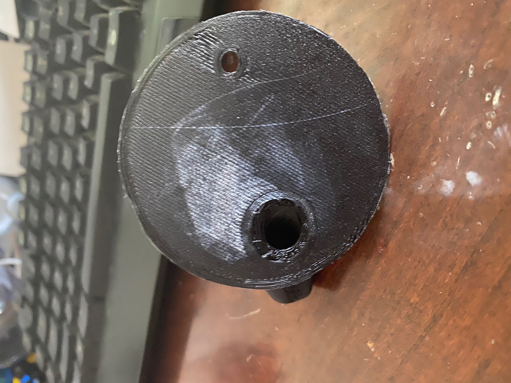
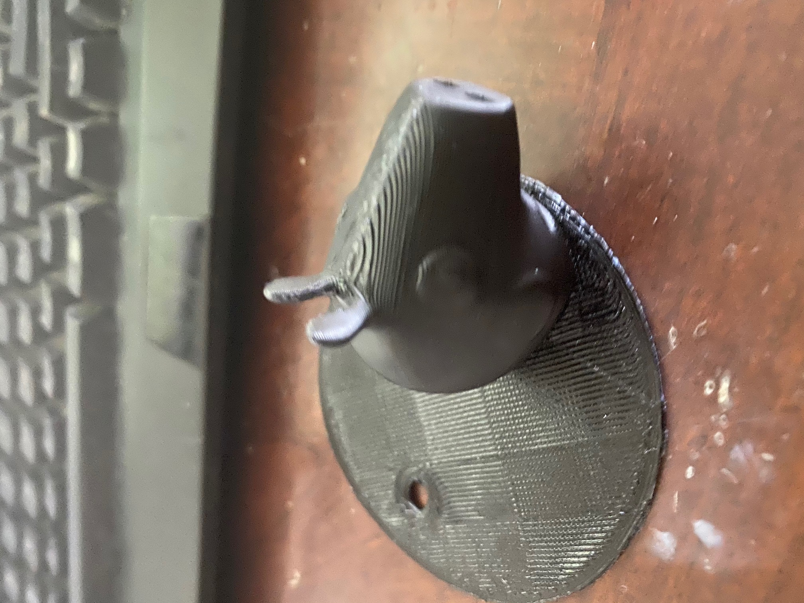
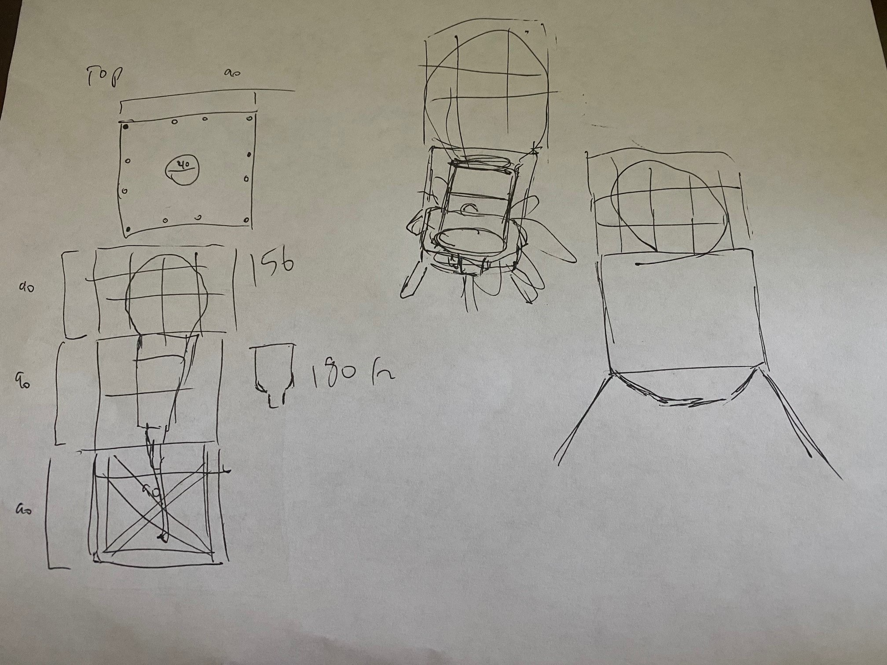
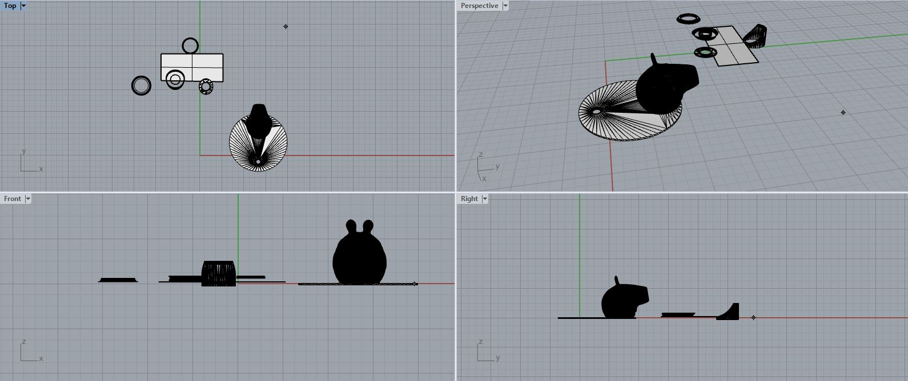
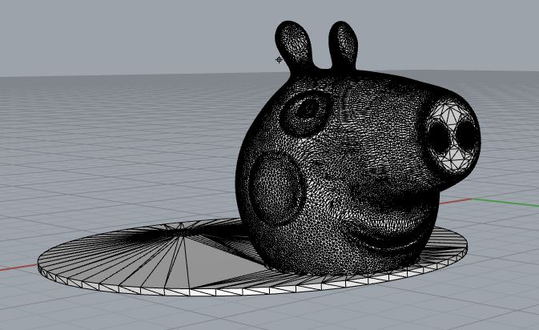
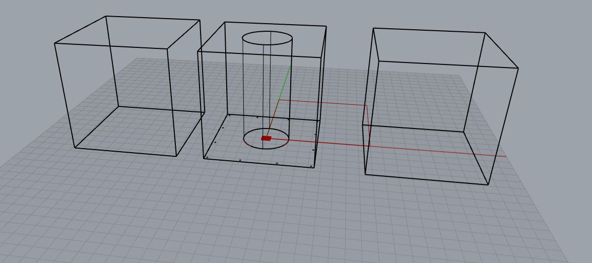

Assignment 4 had us Playing with meshes, and starting on a design for our lamps.
The First part of the assignment had us play with the meshes of STLs
This part of the assignment was very intresting but time consuming.
Playing with the STLs allowed me to create modifications to existing STLs
For this assignment I joined a Mason Jar Spout https://www.thingiverse.com/thing:275268 and a Peppa the Pig Toothpaste Extruder https://www.thingiverse.com/thing:2745536.
Initially I had to cut the top of the Mason Jar Spout and the bottom of Toothpaste Extruder so that I can later join the two.
After this I had to algin the edges of the two the best I could to make the most seamless Join I could
After this I used the Join and Weld Commands to make the verticies 1
Heres the finished Product
 
For this part of the assignment we had to create a nested object.
The second Part of the assignment has us Starting Designs for a Lamp.
The design I decided to do will end up looking like 3 cubes stacked on top of one another.
To do this the center cube will have holes in in to hold the other two Cubes which will then attach with extendend rods.
This will allow the top and bottom cubes to be modular, and changeable with other designs as long as the rods are in the correct places.
Currently I have begun Modelling the Center cube, I have measured the Innards and Lightbulb to have them correctly fit into the lamp.
Heres a sketch of the design for the lamp

Below are all the pics for assignment 2!
 
